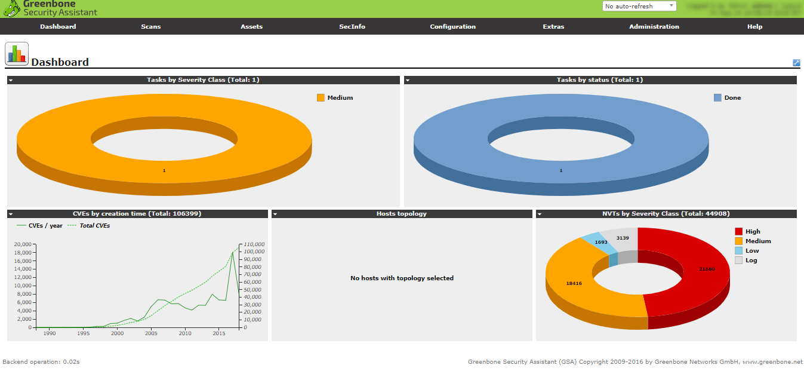
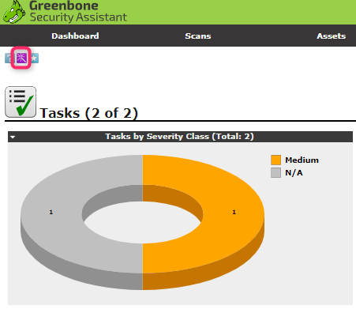
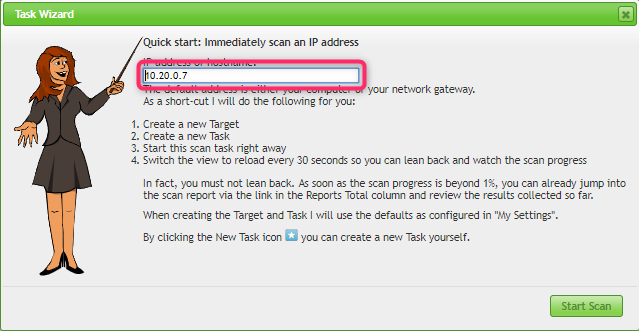
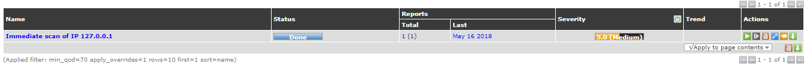
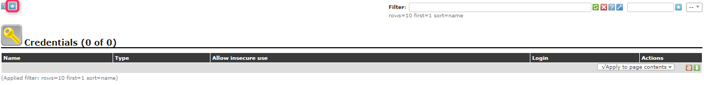
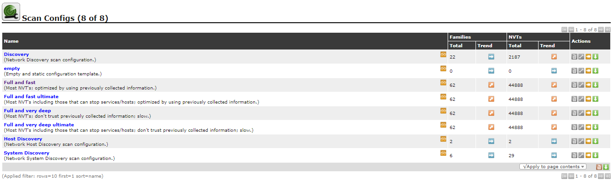
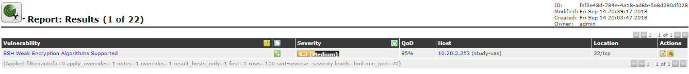

OpenVAS
ログインするとダッシュボードが表示される

スキャンの実施
OpnVASサーバ --> 対象サーバに対してスキャンを実施する
Immediate Scan
メニューバー「Scans」から「Tasks」を選択
左上のマークから「Task Wizard」で追加する


スキャンが完了するとタスクステータス、レポート状況が追加される

Advanced Scan
メニューバー「Configration」から「Credentials」を選択

SSHの接続情報を設定する
「Scans」->「Tasks」の左上のマークから「Task Wizard」->「Advanced Task Wizard」
先程作成したSSH接続情報を選択しタスクを作成しスキャン実施
Advanced Scanは30～40分かかる場合もある
テスト内容
「Configuration」->「Scan Configs」から確認できる
例えばQuickScanで利用される「Full and fast」では下記のようになっている

- Network Vulnerability Test Families
- Scanner Preferences
- Network Vulnerability Test Preferences
スキャナーの設定を除くと内容はネットワークスキャンに関するポリシーが定義されている
SSH設定はあるが、OS内部の状況についてはスキャンしない
スキャンレポートの確認
「Scans」->「Reports」から確認できる

適当に立てたサーバに対してスキャンを実行した場合（FWあり）SSHに対する脆弱性が検知された
SSHで利用されている暗号化強度が弱いものらしい